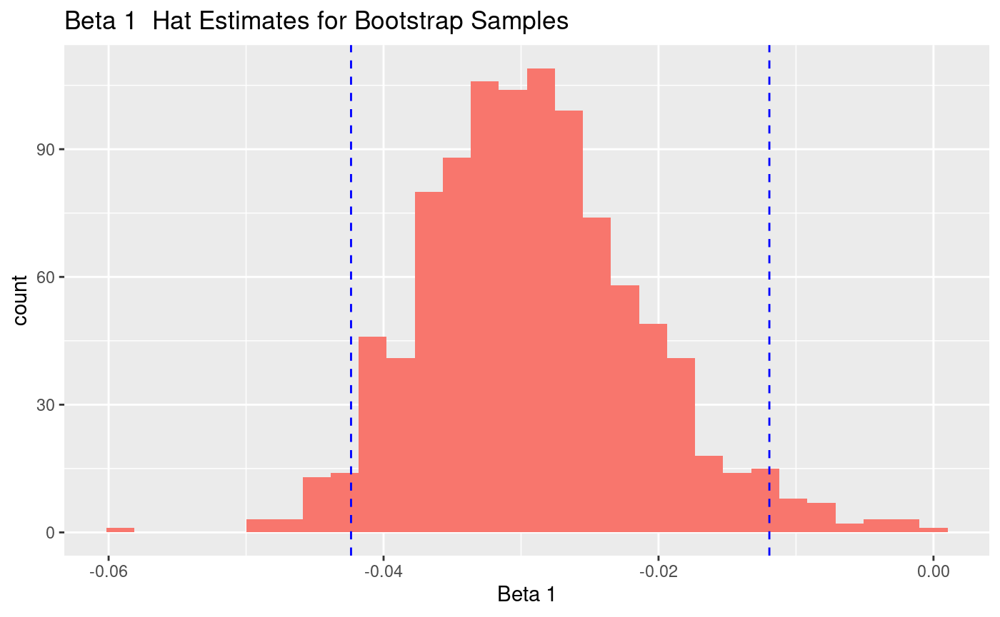

my-vignette.RmdThis package contains an object oriented implementation of the bootstrap method, to be applied to multiple linear regression data. The bootstrap method can be useful when the assumptions of linear regression are invalid. If we have n data points, the bootstrap method consists of taking many samples of our data of size n, sampled with replacement. We can derive point estimates and uncertainties of population quantities, like \(\hat{\beta_i}\), by examining the distribution of our bootstrap samples. A useful discussion of bootstrap regression models can be found at http://statweb.stanford.edu/~owen/courses/305-1314/FoxOnBootingRegInR.pdf. This package consists of 4 R scripts.
This function generates one bootstrap sample. It takes as input your data frame, your y variable name and your x variable names. An example use of this function is bootsamp=bootstrap(mtcars,yterm=“mpg”,xterms=“disp+hp”). This function returns the bootstrapped data frame, the summary lm object, betahat estimates, and the formula for the lm fit.
This function creates iter bootstrap samples. It calls the bootstrap function to accomplish this task. It takes as input your data frame, your y variable name, your x variable names, and iter, the number of bootstrap samples used. It outputs a constructor of class “DABB5734boot” to be used with other functions in this package.
This function plots a histogram of \(\hat{\beta}\) estimates for a chosen \(\beta\) parameter. It also plots vertical lines for the 100(1-\(\alpha\))% confidence interval, derived using the bootstrap percentile interval. It takes as input the object output from the constructor function, which must be of class “DABB5734boot”, the index of the \(\beta\) parameter of interest, and \(\alpha\).
plot(obj)
#> Loading required package: ggplot2
#> `stat_bin()` using `bins = 30`. Pick better value with `binwidth`.